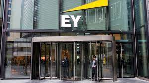

Deon McFarland
June 13,2022
Today was my first day at EY and we met from 12-4pm and we learned about what we will be doing for the launch internship. I learned how to work on the computer and how to navigate the emails and Microsoft teams.
Today we talked about risked management, building your success, timesheets, EY resources and technology. Today we talked about dress code as well and what is acceptable and what’s not at work. We also talked about virtual dress code as well. We also talked about data security and dos and don’ts of EY.
Today was the third day of training and went over Tax at EY. The following services we talked about are business tax services, people advisory services, global compliance and reporting, indirect tax. Tax technology and transformation, international tax, and transaction services and lastly law tax. We also learned excel as well and pivot tables.
Today we still had basic training, but we did have an in-person networking event today. The networking event was in the office in south end that just opened in 2020 so before pandemic. The event was very fun as I met new people and some of my mentors at firm that are on my team.
Today was the final day of training and I got go to the audit panel. This was my favorite panel of the training as they talked about forensic accounting which I was all ears for. The staff even told some of their cool stories of what cases they have stopped which had me hooked. I also got my schedule for next week and my first rotation is tax.
Today I checked in at the building and I met some of the launch interns. We then proceeded to walk around the office and wander around and meet new people. I met my host for the next two weeks as he will be showing me what I’ll be doing work wise. My first task was to shorten all 450 companies’ names in 10 letters. The next task I had was answering this question “ What is the starting balance of the statutory reserve balance at the beginning of the year for a CFC that was once a foreign corporation that had no ties to the United States.
Today my task was to help with the excel sheet and fix names and the amounts. After that I got to go to lunch and with my team and later that day I got to meet with my peer buddy.
Today I started my day by going to chickflia then I joined a meeting with the EY team in India who helped us with the coding for the project. I then got to sit in a meeting with the senior manager which was cool as he met Hungary and Luxemburg. I went to another team meeting and then one of the staff members showed me different things on excel and then I helped with another assignment.
Today I just helped organize the accounts in the excel sheet by putting them in the balance sheet or the income statement.
Today I had to fix the entity list and add the country names to each company for the excel sheet. Overall this week was pretty fun as I got to do real work experience and meet with the teams.
Today I used Microsoft Visio for the first time and I got to help make a flow chart for my team. This chart separated all the companies in different countries by their owners. This was a very hard task in the beginning as I never used Visio before and It took me awhile to get the text boxes down but once I figured it out I finished it pretty fast.
Today I got to help with the trial balances and help fixe the taxes paid column.
Today I helped update some of the excels sheets and did trainings for work.
Today I helped with cleaning up one of the flowcharts and helped with some excel work.
Today is my last day of the tax rotation and I did the following for today was just help with excel and then I had a financial literacy training to attend. My point of contact said that I exceeded expectations and worked as if I was a staff 1on the team.
Today is my first day in risk consulting and I learned a basic overview of what the team does and how they do it. I also was able to take notes in the meeting as well to help.
Today was my first full day with the team and I went to all four meetings and learned about the walkthrough meetings with the client we are working with.
Today I had breakfast with the other interns and had meetings with my team as well. I also had my first task as well which was to help fix a flowchart.
Today I did trainings and helped with another task. This task was using the snip tool which helps you take a screen shot of a page. This is what I did to help make an evidence task for my team.
Today is my last day of the rotation and I had two tasks which was screen shooting and helping out with making an control for the team.
Today was my first day with Forensics and it was exciting as I met two of the partners for Forensics accounting. I get to do a research project and make a power point for this week as well.
Today was really fun day as I got to talk to someone who worked for the FBI that does forensics accounting. I also did a case study today which was cool and we also learned about money laundering and Ponzi scheme.
Today I learned about Management document review and what they do in the forensics service line. I also learned about investigation as well and what EY does in it process. I even learned about data analytics in accounting as well.
Today I got to do some investigation as I got to help one of the teams on a case they’re working on.
Today was last day in Forensics and I turned in my PowerPoint. I also had a great time in this rotation as well.
Today was my first day in audit and it was pretty interesting as I got see what they do. Today I helped out with copying their accounts over for the year end.
Today I got to help with their year end and updating their numbers. I also used canvas and excel to make tis happen.
Today I helped with a placemat and reading it. I also got to update more accounts in the inventory column. I also attended the EY master alternative program as well.
Today I met the team in person in the office which made it easier for me to do tasks. I also just helped with updating inventory again.
Today was my last day at EY and it was a pretty fun day as I got to help the team with more tasks and I even got the job offer for next summer.